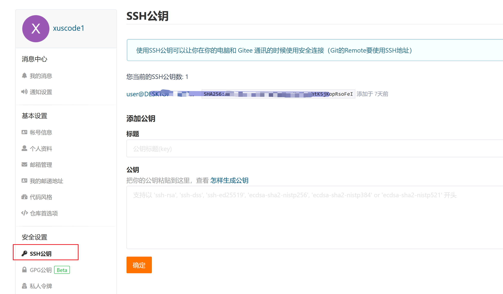
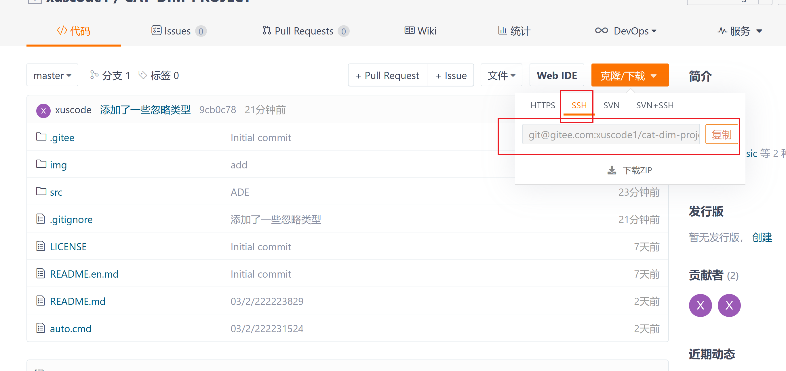

Git 使用帮助
2022-04-02
创建本地SSH证书
windows 进入进入powershell命令行，输入以下两个命令获得证书
生成公钥
ssh-keygen -t rsa
直接按{ENTER},生成密钥
查看公钥
cat ~/.ssh/id_rsa.pub
下载 Git
https://git-scm.com/download/win
可以下载免安装版本 64-bit Git for Windows Portable.

之后可以通过命令行使用Git
Git 常用客户端一
如果不愿意使用命令行，推荐使用下面的工具。


以后就可以通过右键菜单去添加Git 了
Git 常用客户端二
如果不愿意使用上面的工具，Visual Studio 都自带了管理工具，也可以使用。只要克隆下来代码仓库即可使用

Git 仓库
为了保证大家可以协同开发，我们需要建立一个公共仓库去互相访问
常用的仓库有
- https://github.com/
- https://gitee.com/
- https://e.coding.net/signin
- https://gitea.com/
- https://gitlab.com/
等或者自建企业内部仓库。这里我们推荐使用
可以绑定自己的微信，随时查看别人更新的代码
本地电脑 SSH 设置
将之前获得的密钥填写进自己的账号内

这样以后更新自己的代码就无需每次输入密码和账号了
克隆别人的代码
进入一个自己项目的文件夹，右键菜单克隆仓库，克隆的时候选择 SSH

